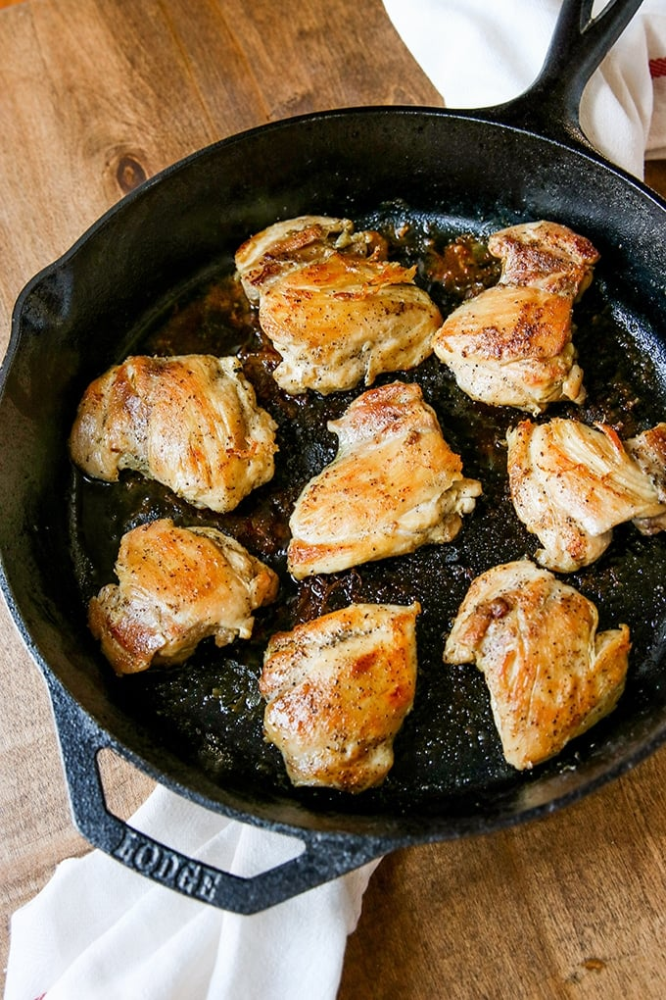

Pan-Seared Chicken Thighs

Description
This is probably the dish I eat the most. I cook these for lunch on the weekends, and bring them to work to reheat daily, but they definitely taste better straight from the oven. With rice and vegetables, this an easy meal.
Ingredients
- 1.5 pounds boneless, skinless chicken thighs
- 2 teaspoons kosher salt
- 1 teaspoon coarse grind black pepper
- 1 teaspoon garlic powder
Steps
- Preheat oven to 400 degrees.
- Place all ingredients in a bowl, and mix with hands to cover chicken evenly.
- Place large cast iron skillet on stove at high heat. Give it a couple minutes to get really hot. You want it just shy of smoking.
- Place chicken in skillet, spread evenly. If it doesn't immediately sizzle, the pan was not hot enough.
- After two or three minutes, turn all pieces of chicken.
- After other side has cooked for one or two minutes, place skillet in the preheated oven, and cook for about 15 minutes.
- Remove chicken from oven. You maybe should use an instant-read thermometer to make sure chicken is at some safe temperature the government tells you it should be at, but I never do, and I ain't dead yet.
- Let the chicken rest in the pan for five minutes, then plate it and eat it.